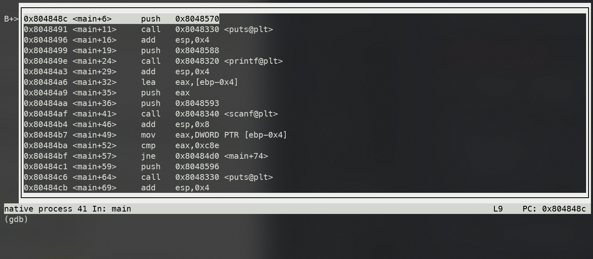

GDB 逆向调试
启动
可以直接控制台输入 gdb 并在 GDB 中指定程序（例为 crackme）。
$ gdb
+ (gdb)
GNU gdb (Ubuntu 8.1.1-0ubuntu1) 8.1.1
Copyright (C) 2018 Free Software Foundation, Inc.
License GPLv3+: GNU GPL version 3 or later <http://gnu.org/licenses/gpl.html>
This is free software: you are free to change and redistribute it.
There is NO WARRANTY, to the extent permitted by law. Type "show copying"
and "show warranty" for details.
This GDB was configured as "x86_64-linux-gnu".
Type "show configuration" for configuration details.
For bug reporting instructions, please see:
<http://www.gnu.org/software/gdb/bugs/>.
Find the GDB manual and other documentation resources online at:
<http://www.gnu.org/software/gdb/documentation/>.
For help, type "help".
Type "apropos word" to search for commands related to "word".
+ (gdb) file crackme
Reading symbols from crackme...done.
或者也可以直接指定程序（假定 crackme 在当前目录下）。
$ gdb ./crackme
或者也可以把 GDB attach 到正在运行的程式上，这对于某些检查是否处于 debugger 环境中的程式比较有用。以下三种方式都可以实现 attach。
$ gdb -p pid
$ gdb progName pid
$ gdb progName
(gdb) attach pid
运行程序和断点
环境变量
可以使用 show env 查看环境变量讯息。
(gdb) show env
设置环境变量则可以用 set env ENV=value，比如下面添加了一个环境变量 FOO，值为 bar。
(gdb) set env FOO = bar
gdb 内部会默认设置两个环境变量 LINES 和 COLUMNS。众所周知，环境变量是放在栈底（大地址）的，增加环境变量会影响栈帧地址的构成。如果希望能减少这种影响，可以用 unset 删除环境变量。
(gdb) unset env LINES
(gdb) unset env COLUMNS
运行程序
指定程序后并不会直接运行，需要使用 run 或者缩写 r。
(gdb) r
需要传参的话可以在 run 之前 set args
(gdb) set args inputfile.txt
(gdb) r
或者直接 r args
(gdb) r inputfile.txt
运行命令也是可以的啦。
(gdb) r $(echo "hello!")
也可以使用 start 或 starti 来运行程序，本质上是在 main （如果是 C 或者 C++ 程序……有人用 gdb debug 其他语言吗？）处设置一临时断点后执行 run。所有传给 start 的参数都会 verbatim 地转递给 run。
starti 与 start 的区别是如果 main 函数存在 elaboration phase （比如 C++ 里全局变量的建构函数执行），starti 将会在 elaboration phase 的开头打临时断点。
断点
在程序运行前和运行中可以用 break 或 b 指定断点（breakpoint），可以使用函数名，行号（逆向的话通常不知道）和指令地址。
使用函数名断点：
(gdb) b main
使用行号断点：
(gdb) b 9
使用指令地址断点（根据汇编），注意因为是地址所以要用 b *address 格式。
譬如在汇编中注意到有 strcmp 函数调用：
(gdb) disas
Dump of assembler code for function main:
0x080486a3 <+0>: push ebp
...
0x080486d1 <+46>: add esp,0x8
0x080486d4 <+49>: push 0x8048817
0x080486d9 <+54>: lea eax,[ebp-0x10]
0x080486dc <+57>: push eax
+ 0x080486dd <+58>: call 0x8048420 <strcmp@plt>
0x080486e2 <+63>: add esp,0x8
...
则可以在 call strcmp 处断点。
(gdb) b *0x080486dd
Breakpoint 2 at 0x80486dd: file crackme.c, line 15.
或者也可以用相对 main 的偏移（offset）来断点。
(gdb) b *main+58
程序运行到断点时会停止，这时可以查看汇编、寄存器值等操作。
(gdb) r
Starting program: /path/to/crackme
Breakpoint 1, main (argc=1, argv=0xffffd6c4) at crackme.c:9
可以使用 info breakpoint 或者 i b 查看当前所有的断点。删除断点则是用 delete <breakpoint number> 或 d <breakpoint number>。
查看汇编、寄存器值、变量值
汇编
disassemble 或 disas 可以查看 当前 栈帧（frame）的汇编。比如刚才在 main 处打了断点，就能够查看 main 的汇编。
(gdb) disas
Dump of assembler code for function main:
0x08048486 <+0>: push ebp
0x08048487 <+1>: mov ebp,esp
0x08048489 <+3>: sub esp,0x4
...
汇编格式默认是 AT&T, 不想看 AT&T 的阴间汇编的话要提前设置 assembly flavor。
(gdb) set disassembly-flavor intel
带上 /m 参数可以把源码和汇编一起排列（如果有源码的话），没有也能显示一组汇编对应的 c 程序行号，打断点更方便一些。
(gdb) disas /m
Dump of assembler code for function main:
7 in crackme.c
0x08048486 <+0>: push ebp
0x08048487 <+1>: mov ebp,esp
0x08048489 <+3>: sub esp,0x4
...
寄存器
可以使用 info register 或缩写 i r 查看寄存器值。可能是最常用的操作了。
(gdb) i r
eax 0xf7fbcdd8 -134492712
ecx 0xfcf63fa0 -50970720
edx 0xffffd654 -10668
ebx 0x0 0
esp 0xffffd624 0xffffd624
ebp 0xffffd628 0xffffd628
esi 0xf7fbb000 -134500352
edi 0x0 0
eip 0x804848c 0x804848c <main+6>
eflags 0x286 [ PF SF IF ]
cs 0x23 35
ss 0x2b 43
ds 0x2b 43
es 0x2b 43
fs 0x0 0
gs 0x63 99
变量
如果你知道变量名，可以用 print var 或 p var 打印其内容，也可以打印寄存器内容。
比如打印 argv[0] （程序名）
(gdb) p argv[0]
$1 = 0xffffd7f4 "/path/to/crackme"
注意到 print 有一个自增 id，我们可以通过 print $id 来打印之前打印过的值。
(gdb) p $1
$2 = 0xffffd7f4 "/path/to/crackme"
x address 可以用来检视内存内容，比如 x $eax 会把 %eax 中存储的值解读为内存地址，并打印其内容。
p 和 x 可以用基本相同的一套格式化方法来指定要打印变量 / 内存地址被解读为何种类型。
/o：8 进制（octal）/x：16 进制 （hexadecimal）/u：无符号 10 进制（unsigned decimal）/t：binary/f：floating point/a：address —— 这不还是 16 进制吗 =、=/c：char/s：string
x 模式还可以用 /i 采用指令（instruction）格式化方法。在搞 Buffer Overflow 的时候查看写进栈内的 shellcode 异常好用。
(gdb) x/7i 0xfffd6b0
0xffffd6b0 add ecx, esp
0xffffd6b2 push ecx
0xffffd6b3 mov ecx, esp
0xffffd6b5 xor edx, edx
0xffffd6b7 push 0
->0xffffd6b9 sar bl, 1
0xffffd6bb test dword ptr [eax], 0
x 还能指定字符串的字符宽度（譬如 UTF-16le 或 UTF-8 字符宽度就可能为 2 或 3 个字节）。
b: byteh: halfword (16-bit value)w: word (32-bit value)l: giant word (64-bit value)
来看看打印效果：
(gdb) x/bs 0x8048817
0x8048817: "250381"
(gdb) x/ws 0x8048817
0x8048817: U"\x33303532\x50003138\x77737361\x2064726f\x3a204b4f\x616c0029\x3a313062\x6f747574\x6c616972\x766e4900\x64696c61\x73615020\x726f7773Ⅴ\x31b0100䀻܀\xfffbc000烿\xfffc8000铿\xfffcd000峿\xfffda600\xa8ff\xfffe5300죿\xfffed000\xffff3000\x134ff᐀"
(gdb) x/hs 0x8048817
0x8048817: u"㔲㌰ㄸ倀獡睳牯䭏㨠)慬ぢ㨱畴潴楲污䤀癮污摩倠獡睳牯Ⅴ"
(gdb) x/ls 0x8048817
0x8048817: "250381"
其他
如果想边看汇编边调试的话，可以用 layout asm 显示汇编和命令行。
(gdb) layout asm
效果如图：

想要退出 layout 模式只需 Ctrl + X, A （按住 Ctrl + X 后再按 A，类似 VSCode 的 Ctrl + K, * 系列操作）。
layout 除了显示汇编，还可以显示其他内容。具体参数如下：
src: Displays source and command windows.asm: Displays disassembly and command windows.split: Displays source, disassembly and command windows.regs: Displays register window. If existing layout
按步调试
continue 或缩写 c 可以让程序运行到下一个断点。
next 或 n 可以让程序运行到 当前栈帧 的下一条语句。在遇到函数调用时，next 不会跟踪进入函数。
step 或 s 可以让程序运行到下一条语句。在遇到函数调用的时候，step 会跟踪进入函数。
nexti 和 stepi 与不带 i 的指令类似，区别是他们会让程序运行到下一条汇编指令（i 指 instruction）。
Tips
觉得在 GDB 里看汇编太累的话可以 objdump 整个文件，在喜欢的编辑器里带着高亮慢慢看。 Sublime Text 3 推荐 NASM x86 Assembly 这个高亮。
$ objdump -M intel -d crackme > crackme.asm
使用 pwndbg 这个 GDB 插件可以把工作量（指记住 GDB 命令）减少很多。在每次运行到断点时 pwndbg 都会把可能需要的信息漂亮地打出来